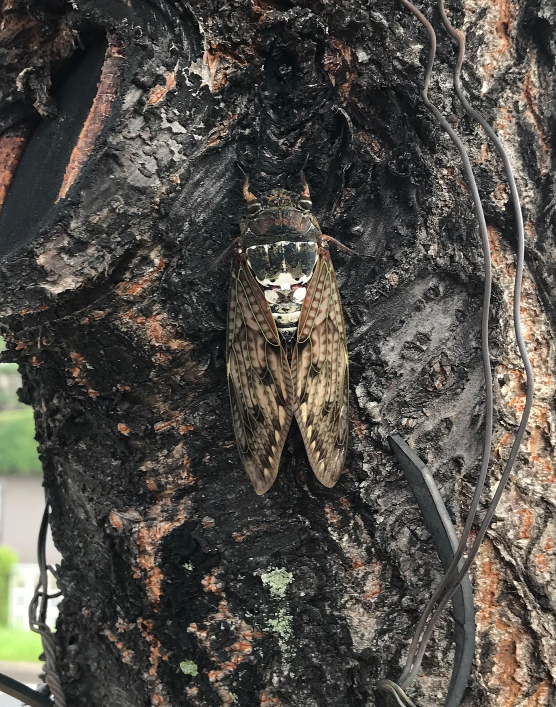
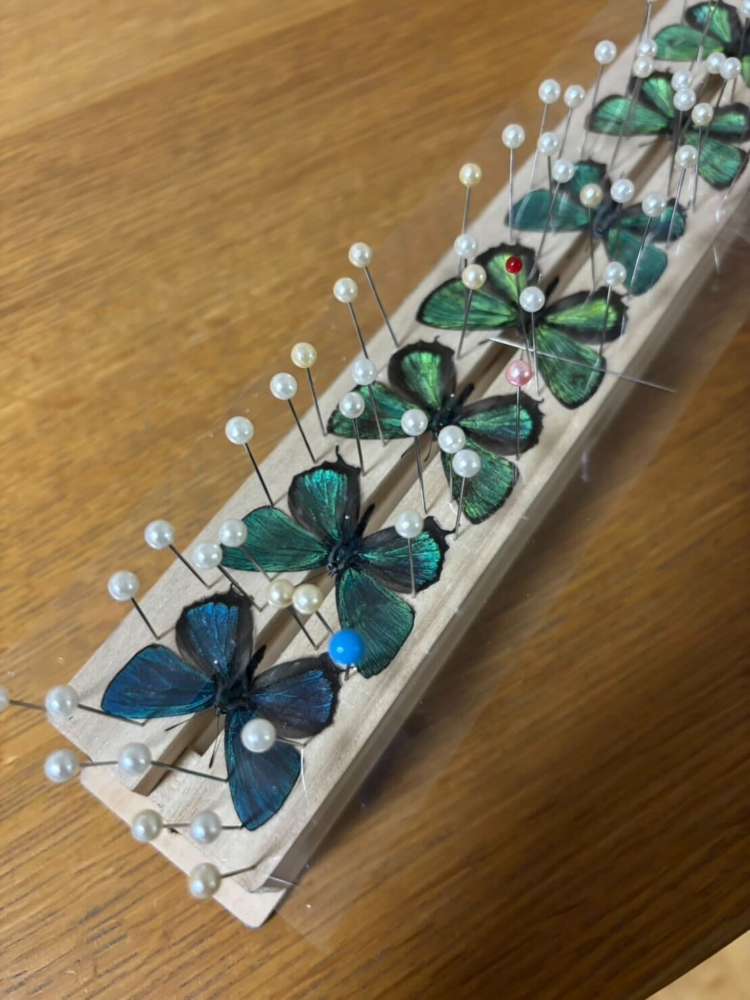
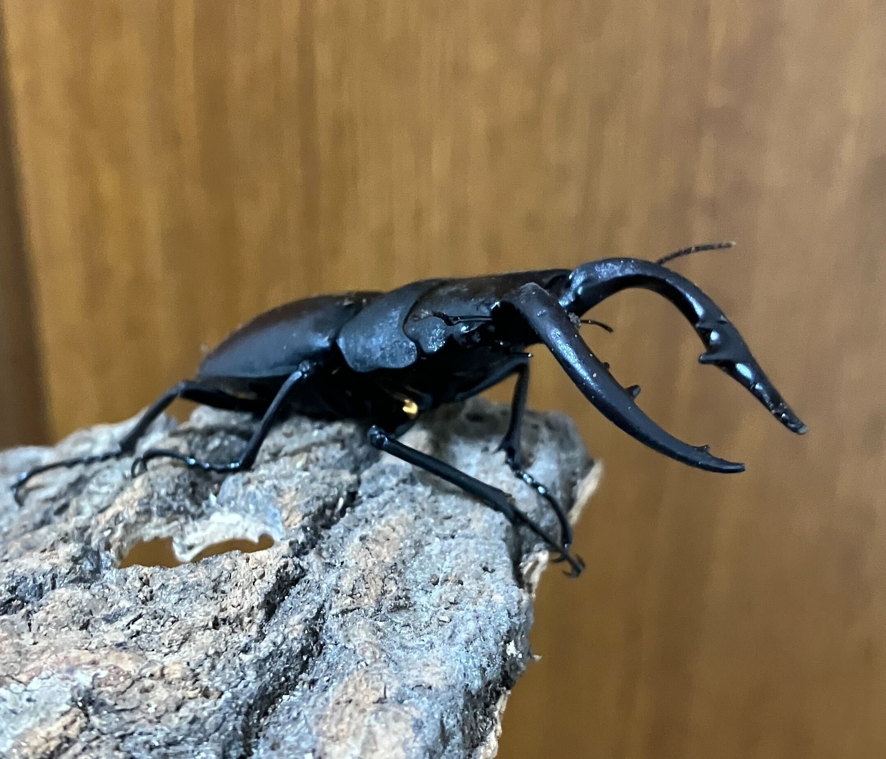

Insector
昆虫部門：インセクター
野外への昆虫採集
春の昆虫が出てき始めた時期から定期的に野外での昆虫採集の募集、実施を行っています。たも網はサークルからの貸し出しを行っているので手ぶらでも行くことができます！

部室での活動
インセクターでは部室での活動も行っています。部室には昆虫に関する書籍や標本があり、自由に閲覧することができます。また、部室内には標本作成に必要な道具がそろっているので、いつでも標本作成をすることができます。

グループLINE
インセクターのグループLINEは、ほかの２つの部門に比べて活発に動いており、各々が個人で採集した昆虫の報告や同定の依頼、飼育方法を聞くなど様々な用途で使うことができます！
